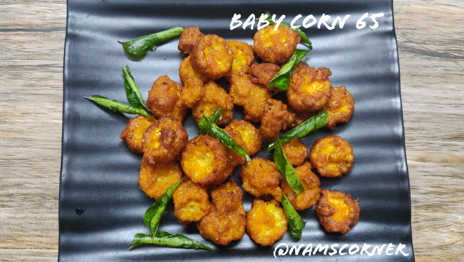

Baby Corn 65

Description
Baby corn (also known as young corn, cornlets or baby sweetcorn) is a cereal grain taken from corn (maize) harvested early while the stalks are still small and immature. It typically is eaten whole — cob included — in contrast to mature corn, whose cob is too tough for human consumption.
- Baby Corn
- Tomato
- Onion
- Spicies
- Coriandor Leaves
- First fry sliced tomatos and Onions on a pan
\
- Then add boiled baby corn to it
- Now, mix the fried vegetables and boiled baby corn,..well
- Finally, your baby corn 65 is ready to serve.
Enjoy.